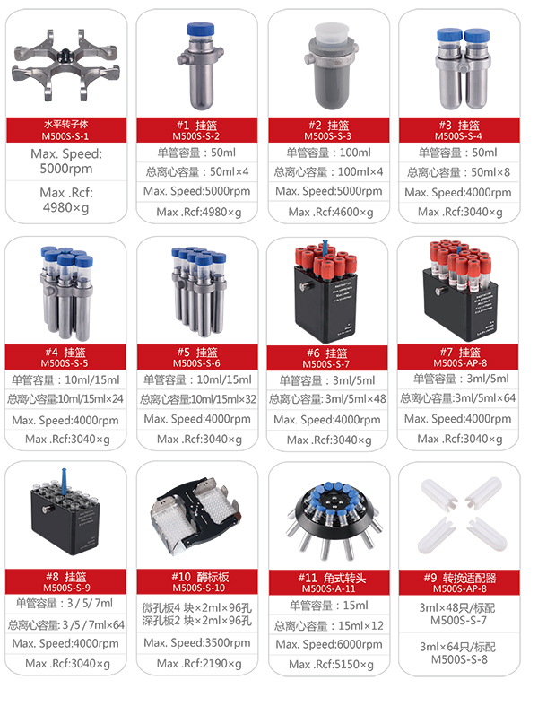
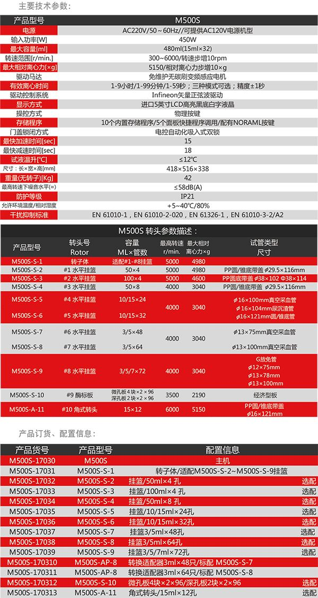

在线客服
台式低速离心机厂家 上海低速台式离心机◎采用先进可靠的Infineon矢量正弦波驱动控制系统，可精确的控制转速、时间和相对离心力；◎优选进口5英寸LCD高亮黑底白字液晶显示，设定及运行参数实时在线清晰明了；◎免维护无碳刷变频感应电机，速度范围100～6000rpm，精确度± 15rpm； ◎离心转速与离心力步增调节为10rpm/10×g；台式低速离心机 低速离心
产品简述
简述： 空冷型台式低速离心机兼具强大的功能、高度的通用性、简便的操作性等优点，采用创新的控制技术、且质量可靠、性能优越，而广泛用于医学临床生化、血液学、免疫学及临床科研和分子生物学研究以及工业实验室的常规分析，在遗传基因、蛋白核酸以及PCR产物等实验研究中更为显著。
详细介绍
空冷型台式低速离心机
◎采用先进可靠的Infineon矢量正弦波驱动控制系统，可精确的控制转速、时间和相对离心力；
◎优选进口5英寸LCD高亮黑底白字液晶显示，设定及运行参数实时在线清晰明了；
◎免维护无碳刷变频感应电机，速度范围100～6000rpm，精确度± 15rpm；
◎离心转速与离心力步增调节为10rpm/10×g；
◎有效离心时间控制：1-9小时/1-99分钟/1-59秒，三种模式可选，精度±1秒；
◎瞬时离心（Flash），按住即可实现快速、便捷地离心，自动记忆最后一次实验值；
◎高强度的主机及转头材料，可抵御各种化学腐蚀，具有密封性能和无限次耐高温消毒功能不锈钢腔体，坚固构造，适于耐久使用；
◎全新创新式电控自动化吸入式双锁，实现轻松快速开闭机盖，开闭机盖安静、安全；
◎升降速实时显示更方便快速调整完全满足各种离心所需；
◎单钮旋动控制，即可进行快速的进行参数更改；
◎配有门盖保护、超速、过电压电流和不平衡探测系统，可以对离心过程实时监控，确保仪器安全运行, 运转结束、出错及出现不平衡时，声音信号提示，同时停止运转，LCD液晶屏显示结果代码；
◎强制通风降温及卓越的空气热交换技术，显著有效地降低转头温度的升高，确保样品不被破坏，离心结束后自动打开离心机门盖，防止样品过热，便于取放样品；
◎离心腔外设有隔离层可充分吸收噪音，降低振动，给实验人员一份宁静
| 产品型号 | M500S | |||||||||
| 电源 | AC220V/50～60Hz//可提供AC120V电源机型 | |||||||||
| 输入功率[W] | 450W | |||||||||
| 最大容量[ml] | 480ml(15ml×32) | |||||||||
| 转速范围[r/min.] | 300~6000/转速步增10rpm | |||||||||
| 最大相对离心力[×g] | 5150/相对离心力步增10×g | |||||||||
| 驱动马达 | 免维护无碳刷变频感应电机 | |||||||||
| 有效离心时间 | 1-9小时/1-99分钟/1-59秒；三种模式可选；精度±1秒 | |||||||||
| 驱动控制系统 | Infineon矢量正弦波驱动 | |||||||||
| 显示方式 | 进口5英寸LCD高亮黑底白字液晶 | |||||||||
| 操控方式 | 物理按键 | |||||||||
| 存储程序 | 10个内置存储程序/5个面板快捷程序调用/配有NORAML按键 | |||||||||
| 门盖锁闭方式 | 电控自动化吸入式双锁 | |||||||||
| 最快加速时间[sec] | 15 | |||||||||
| 最快减速时间[sec] | 18 | |||||||||
| 试液温升[℃] | ≤12℃ | |||||||||
| 尺寸：长×宽×高[mm] | 418×516×338 | |||||||||
| 重量(无转子)[Kg] | 42 | |||||||||
| 最高转速下噪音水平(≈) | ≤58dB(A) | |||||||||
| 防护等级 | IP21 | |||||||||
| 允许环境温度/相对湿度 | +5~40℃/80% | |||||||||
| 干扰抑制标准 | EN 61010-1，EN 61010-2-020，EN 61326-1，EN 61010-3-2/A2 | |||||||||
M500S 转头参数描述： | |||||||||||
| 产品型号 | 转头号 Rotor | 容量 ML×管数 | 最高转速 r/min. | 最大相对离心力×g | 试管类型 尺寸 | ||||||
| M500S-S-1 | 转子体 | 适配#1-#8挂篮 | 5000 | 4980 | |||||||
| M500S-S-2 | #1 水平挂篮 | 50×4 | 5000 | 4980 | PP圆/锥底带盖 Φ29.5×116mm | ||||||
| M500S-S-3 | #2 水平挂篮 | 100×4 | 5000 | 4600 | PP圆底带盖 Φ38×102 Φ38×114 | ||||||
| M500S-S-4 | #3 水平挂篮 | 50×8 | 4000 | 3040 | PP圆/锥底带盖 Φ29.5×116mm | ||||||
| M500S-S-5 | #4 水平挂篮 | 10/15×24 | 4000 | 3040 | Φ16×100mm真空采血管 | ||||||
| Φ16×104mm尿沉渣管 | |||||||||||
| M500S-S-6 | #5 水平挂篮 | 10/15×32 | Φ16×121mm圆/锥底管 | ||||||||
| M500S-S-7 | #6 水平挂篮 | 3/5×48 | 4000 | 3040 | Φ13×75mm真空采血管 | ||||||
| M500S-S-8 | #7 水平挂篮 | 3/5×64 | Φ13×100mm真空采血管 | ||||||||
| M500S-S-9 | #8 水平挂篮 | 3/5/7×72 | 4000 | 3040 | G放免管 Φ12×75mm Φ13×78mm Φ13×100mm | ||||||
| M500S-S-10 | #9 酶标板 | 微孔板4 块×2×96 深孔板2 块×2×96 | 3500 | 2190 | 经济型板 | ||||||
| M500S-A-11 | #10 角式转头 | 15×12 | 6000 | 5150 | PP圆/锥底带盖 Φ16×121mm | ||||||
| 产品货号 | 产品型号 | 配置信息 | |||||||
| M500S-17030 | M500S | 主机 | |||||||
| M500S-17031 | M500S-S-1 | 转子体/适配M500S-S-2~M500S-S-9挂篮 | |||||||
| M500S-17032 | M500S-S-2 | 挂篮/50ml×4 孔 选配 | |||||||
| M500S-17033 | M500S-S-3 | 挂篮/100ml×4 孔 选配 | |||||||
| M500S-17034 | M500S-S-4 | 挂篮/50ml×8 孔 选配 | |||||||
| M500S-17035 | M500S-S-5 | 挂篮/10/15ml×24孔 选配 | |||||||
| M500S-17036 | M500S-S-6 | 挂篮/10/15ml×32孔 选配 | |||||||
| M500S-17037 | M500S-S-7 | 挂篮3/5ml×48孔 选配 | |||||||
| M500S-17038 | M500S-S-8 | 挂篮3/5ml×64孔 选配 | |||||||
| M500S-17039 | M500S-S-9 | 挂篮3/5/7ml×72孔 选配 | |||||||
| M500S-170310 | M500S-AP-8 | 转换适配器3ml×48只/标配 M500S-S-7 | |||||||
| M500S-170311 | M500S-AP-8 | 转换适配器3ml×64只/标配 M500S-S-8 | |||||||
| M500S-170312 | M500S-S-10 | 微孔板4块×2×96/深孔板2块×2×96 选配 | |||||||
| M500S-170313 | M500S-A-11 | 角式转头/15ml×12孔 选配 | |||||||
 在线客服
在线客服